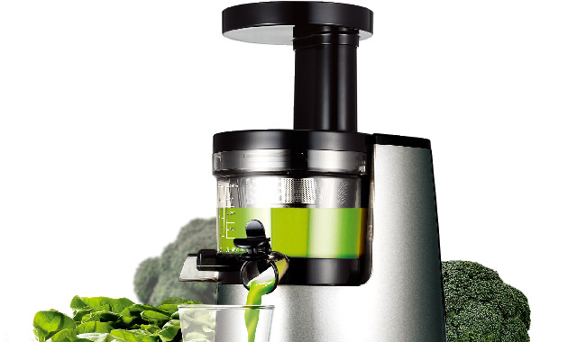
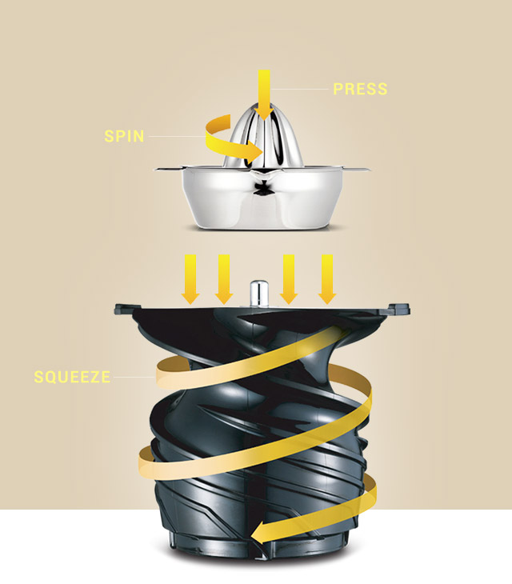
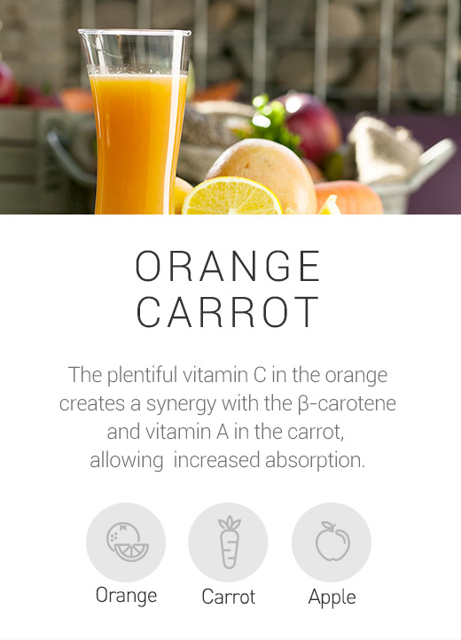
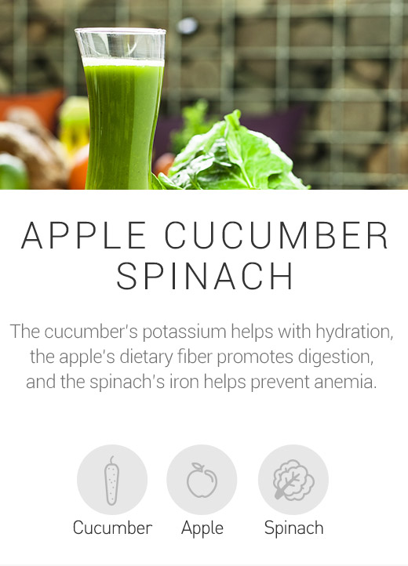
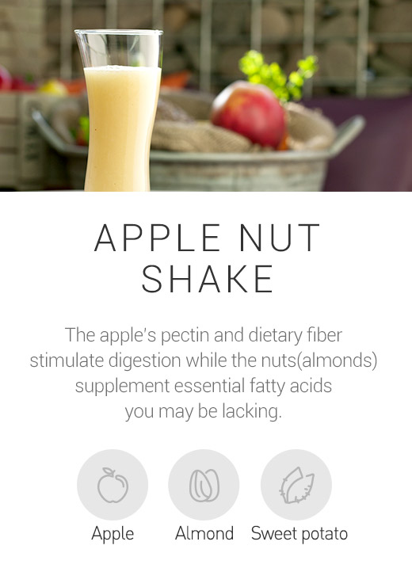

GOOD HEALTH STARTS WITH HUROM
A HEALTHY HABIT THAT'S EASY TO KEEP
Learn how Hurom juice is as good for your body as it is for your taste buds.

POWERFUL NUTRITION GENTLE DELIVERY
Preserve more of the natural nutrition, flavor, and color.

RECIPES
GET THE JUICES FLOWING!
For weight loss, detox, or just a tall glass of deliciousness, the Hurom juicer'sunmatched versatility means that your whim is our command.
-

ORANGE CARROT
The plentiful vitamin C in the orange creates a synergy with the β-carotene and vitamin A in the carrot, allowing increased absorption.
Orange, Carrot, Apple -

APPLE CUCUMBER SPINACH
The cucumber’s potassium helps with hydration, the apple’s dietary fiber promotes digestion, and the spinach’s iron helps prevent anemia.
Cucumber, Apple, Spinach -

APPLE NUT SHAKE
The apple’s pectin and dietary fiber stimulate digestion while the nuts(almonds) supplement essential fatty acids you may be lacking.
Apple, Almond, Sweet potato